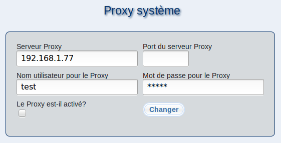

Si votre serveur m23 est connecté sur internet à travers un serveur proxy, vous pouvez effectuer les paramétrages requis dans le dialogue.
Dans ''Serveur Proxy'' et ''Port du serveur Proxy'', saisissez l'adresse IP / le nom F.Q.D.N du proxy (incluant le nom de domaine) et le numéro de port à utiliser. Si une authentification est nécessaire, saisissez les paramètres dans ''Nom utilisateur pour le Proxy'' et ''Mot de passe pour le Proxy''.
Pour activer le proxy, cocher l'option ''Le Proxy est-il activé?'', décochez pour désactiver.
Cliquez sur ''Changer'' pour valider les changements
root
2019-07-18